Plotting cell points on a reduced 2D plane and coloring according to the groups.
Usage
CellDimPlot(
srt,
group.by,
reduction = NULL,
dims = c(1, 2),
split.by = NULL,
cells = NULL,
show_na = FALSE,
show_stat = ifelse(identical(theme_use, "theme_blank"), FALSE, TRUE),
pt.size = NULL,
pt.alpha = 1,
palette = "Paired",
palcolor = NULL,
bg_color = "grey80",
label = FALSE,
label.size = 4,
label.fg = "white",
label.bg = "black",
label.bg.r = 0.1,
label_insitu = FALSE,
label_repel = FALSE,
label_repulsion = 20,
label_point_size = 1,
label_point_color = "black",
label_segment_color = "black",
cells.highlight = NULL,
cols.highlight = "black",
sizes.highlight = 1,
alpha.highlight = 1,
stroke.highlight = 0.5,
add_density = FALSE,
density_color = "grey80",
density_filled = FALSE,
density_filled_palette = "Greys",
density_filled_palcolor = NULL,
add_mark = FALSE,
mark_type = c("hull", "ellipse", "rect", "circle"),
mark_expand = unit(3, "mm"),
mark_alpha = 0.1,
mark_linetype = 1,
lineages = NULL,
lineages_trim = c(0.01, 0.99),
lineages_span = 0.75,
lineages_palette = "Dark2",
lineages_palcolor = NULL,
lineages_arrow = arrow(length = unit(0.1, "inches")),
lineages_linewidth = 1,
lineages_line_bg = "white",
lineages_line_bg_stroke = 0.5,
lineages_whiskers = FALSE,
lineages_whiskers_linewidth = 0.5,
lineages_whiskers_alpha = 0.5,
stat.by = NULL,
stat_type = "percent",
stat_plot_type = "pie",
stat_plot_position = c("stack", "dodge"),
stat_plot_size = 0.15,
stat_plot_palette = "Set1",
stat_palcolor = NULL,
stat_plot_alpha = 1,
stat_plot_label = FALSE,
stat_plot_label_size = 3,
graph = NULL,
edge_size = c(0.05, 0.5),
edge_alpha = 0.1,
edge_color = "grey40",
paga = NULL,
paga_type = "connectivities",
paga_node_size = 4,
paga_edge_threshold = 0.01,
paga_edge_size = c(0.2, 1),
paga_edge_color = "grey40",
paga_edge_alpha = 0.5,
paga_transition_threshold = 0.01,
paga_transition_size = c(0.2, 1),
paga_transition_color = "black",
paga_transition_alpha = 1,
paga_show_transition = FALSE,
velocity = NULL,
velocity_plot_type = "raw",
velocity_n_neighbors = ceiling(ncol(srt@assays[[1]])/50),
velocity_density = 1,
velocity_smooth = 0.5,
velocity_scale = 1,
velocity_min_mass = 1,
velocity_cutoff_perc = 5,
velocity_arrow_color = "black",
velocity_arrow_angle = 20,
streamline_L = 5,
streamline_minL = 1,
streamline_res = 1,
streamline_n = 15,
streamline_width = c(0, 0.8),
streamline_alpha = 1,
streamline_color = NULL,
streamline_palette = "RdYlBu",
streamline_palcolor = NULL,
streamline_bg_color = "white",
streamline_bg_stroke = 0.5,
hex = FALSE,
hex.linewidth = 0.5,
hex.count = TRUE,
hex.bins = 50,
hex.binwidth = NULL,
raster = NULL,
raster.dpi = c(512, 512),
aspect.ratio = 1,
title = NULL,
subtitle = NULL,
xlab = NULL,
ylab = NULL,
legend.position = "right",
legend.direction = "vertical",
theme_use = "theme_scp",
theme_args = list(),
combine = TRUE,
nrow = NULL,
ncol = NULL,
byrow = TRUE,
force = FALSE,
seed = 11
)Arguments
- srt
A Seurat object.
- group.by
Name of one or more meta.data columns to group (color) cells by (for example, orig.ident).
- reduction
Which dimensionality reduction to use. If not specified, will use the reduction returned by
DefaultReduction.- dims
Dimensions to plot, must be a two-length numeric vector specifying x- and y-dimensions
- split.by
Name of a column in meta.data column to split plot by.
- cells
Subset cells to plot.
- show_na
Whether to assign a color from the color palette to NA group. If
FALSE, cell points with NA level will colored bybg_color.- show_stat
Whether to show statistical information on the plot.
- pt.size
Point size.
- pt.alpha
Point transparency.
- palette
Name of a color palette name collected in SCP. Default is "Paired".
- palcolor
Custom colors used to create a color palette.
- bg_color
Color value for background(NA) points.
- label
Whether to label the cell groups.
- label.size
Size of labels.
- label.fg
Foreground color of label.
- label.bg
Background color of label.
- label.bg.r
Background ratio of label.
- label_insitu
Whether to place the raw labels (group names) in the center of the cells with the corresponding group. Default is
FALSE, which using numbers instead of raw labels.- label_repel
Logical value indicating whether the label is repel away from the center points.
- label_repulsion
Force of repulsion between overlapping text labels. Defaults to 20.
- label_point_size
Size of the center points.
- label_point_color
Color of the center points.
- label_segment_color
Color of the line segment for labels.
- cells.highlight
A vector of cell names to highlight.
- cols.highlight
Color used to highlight the cells.
- sizes.highlight
Size of highlighted cell points.
- alpha.highlight
Transparency of highlighted cell points.
- stroke.highlight
Border width of highlighted cell points.
- add_density
Whether to add a density layer on the plot.
- density_color
Color of the density contours lines.
- density_filled
Whether to add filled contour bands instead of contour lines.
- density_filled_palette
Color palette used to fill contour bands.
- density_filled_palcolor
Custom colors used to fill contour bands.
- lineages
Lineages/pseudotime to add to the plot. If specified, curves will be fitted using
loessmethod.- lineages_trim
Trim the leading and the trailing data in the lineages.
- lineages_span
The parameter α which controls the degree of smoothing in
loessmethod.- lineages_palette
Color palette used for lineages.
- lineages_palcolor
Custom colors used for lineages.
- lineages_arrow
Set arrows of the lineages. See
arrow.- lineages_linewidth
Width of fitted curve lines for lineages.
- lineages_line_bg
Background color of curve lines for lineages.
- lineages_line_bg_stroke
Border width of curve lines background.
- lineages_whiskers
Whether to add whiskers for lineages.
- lineages_whiskers_linewidth
Width of whiskers for lineages.
- lineages_whiskers_alpha
Transparency of whiskers for lineages.
- stat.by
The name of a metadata column to stat.
- stat_type
Set stat types ("percent" or "count").
- stat_plot_type
Set the statistical plot type.
- stat_plot_position
Position adjustment in statistical plot.
- stat_plot_size
Set the statistical plot size. Defaults to 0.1
- stat_plot_palette
Color palette used in statistical plot.
- stat_palcolor
Custom colors used in statistical plot
- stat_plot_alpha
Transparency of the statistical plot.
- stat_plot_label
Whether to add labels in the statistical plot.
- stat_plot_label_size
Label size in the statistical plot.
- graph
Specify the graph name to add edges between cell neighbors to the plot.
- edge_size
Size of edges.
- edge_alpha
Transparency of edges.
- edge_color
Color of edges.
- paga
Specify the calculated paga results to add a PAGA graph layer to the plot.
- paga_type
PAGA plot type. "connectivities" or "connectivities_tree".
- paga_node_size
Size of the nodes in PAGA plot.
- paga_edge_threshold
Threshold of edge connectivities in PAGA plot.
- paga_edge_size
Size of edges in PAGA plot.
- paga_edge_color
Color of edges in PAGA plot.
- paga_edge_alpha
Transparency of edges in PAGA plot.
- paga_transition_threshold
Threshold of transition edges in PAGA plot.
- paga_transition_size
Size of transition edges in PAGA plot.
- paga_transition_color
Color of transition edges in PAGA plot.
- paga_transition_alpha
Transparency of transition edges in PAGA plot.
- paga_show_transition
Whether to show transitions between edges.
- velocity
Specify the calculated RNA velocity mode to add a velocity layer to the plot.
- velocity_plot_type
Set the velocity plot type.
- velocity_n_neighbors
Set the number of neighbors used in velocity plot.
- velocity_density
Set the density value used in velocity plot.
- velocity_smooth
Set the smooth value used in velocity plot.
- velocity_scale
Set the scale value used in velocity plot.
- velocity_min_mass
Set the min_mass value used in velocity plot.
- velocity_cutoff_perc
Set the cutoff_perc value used in velocity plot.
- velocity_arrow_color
Color of arrows in velocity plot.
- velocity_arrow_angle
Angle of arrows in velocity plot.
- streamline_L
Typical length of a streamline in x and y units
- streamline_minL
Minimum length of segments to show.
- streamline_res
Resolution parameter (higher numbers increases the resolution).
- streamline_n
Number of points to draw.
- streamline_width
Size of streamline.
- streamline_alpha
Transparency of streamline.
- streamline_color
Color of streamline.
- streamline_palette
Color palette used for streamline.
- streamline_palcolor
Custom colors used for streamline.
- streamline_bg_color
Background color of streamline.
- streamline_bg_stroke
Border width of streamline background.
- hex
Whether to chane the plot type from point to the hexagonal bin.
- hex.linewidth
Border width of hexagonal bins.
- hex.count
Whether show cell counts in each hexagonal bin.
- hex.bins
Number of hexagonal bins.
- hex.binwidth
Hexagonal bin width.
- raster
Convert points to raster format, default is NULL which automatically rasterizes if plotting more than 100,000 cells
- raster.dpi
Pixel resolution for rasterized plots, passed to geom_scattermore(). Default is c(512, 512).
- aspect.ratio
Aspect ratio of the panel.
- title
The text for the title.
- subtitle
The text for the subtitle for the plot which will be displayed below the title.
- xlab
x-axis label.
- ylab
y-axis label.
- legend.position
The position of legends ("none", "left", "right", "bottom", "top").
- legend.direction
Layout of items in legends ("horizontal" or "vertical")
- theme_use
Theme used. Can be a character string or a theme function. For example,
"theme_blank"orggplot2::theme_classic.- theme_args
Other arguments passed to the
theme_use.- combine
Combine plots into a single
patchworkobject. IfFALSE, return a list of ggplot objects.- nrow
Number of rows in the combined plot.
- ncol
Number of columns in the combined plot.
- byrow
Logical value indicating if the plots should be arrange by row (default) or by column.
- force
Whether to force drawing regardless of maximum levels in any cell group is greater than 100.
- seed
Random seed set for reproducibility
Examples
data("pancreas_sub")
CellDimPlot(pancreas_sub, group.by = "SubCellType", reduction = "UMAP")
#> Warning: No shared levels found between `names(values)` of the manual scale and the data's fill values.
 CellDimPlot(pancreas_sub, group.by = "SubCellType", reduction = "UMAP", theme_use = "theme_blank")
#> Warning: No shared levels found between `names(values)` of the manual scale and the data's fill values.
CellDimPlot(pancreas_sub, group.by = "SubCellType", reduction = "UMAP", theme_use = ggplot2::theme_classic, theme_args = list(base_size = 16))
#> Warning: No shared levels found between `names(values)` of the manual scale and the data's fill values.
CellDimPlot(pancreas_sub, group.by = "SubCellType", reduction = "UMAP") %>% panel_fix(height = 2, raster = TRUE, dpi = 30)
#> Error in panel_fix(., height = 2, raster = TRUE, dpi = 30): unused arguments (height = 2, raster = TRUE, dpi = 30)
# Highlight cells
CellDimPlot(pancreas_sub,
group.by = "SubCellType", reduction = "UMAP",
cells.highlight = colnames(pancreas_sub)[pancreas_sub$SubCellType == "Epsilon"]
)
#> Warning: No shared levels found between `names(values)` of the manual scale and the data's fill values.
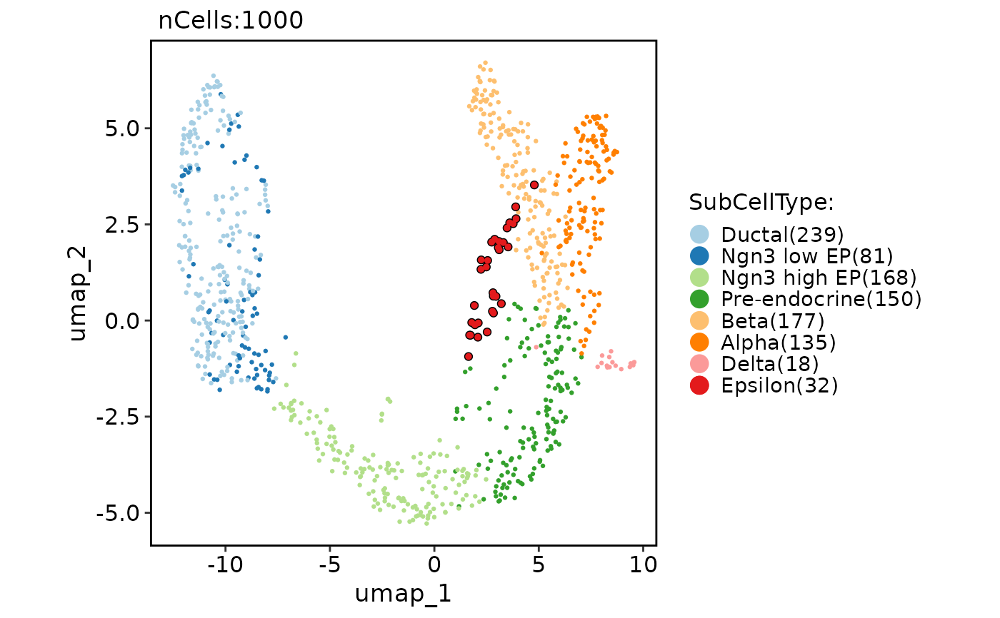
CellDimPlot(pancreas_sub,
group.by = "SubCellType", split.by = "Phase", reduction = "UMAP",
cells.highlight = TRUE, theme_use = "theme_blank", legend.position = "none"
)
#> Warning: No shared levels found between `names(values)` of the manual scale and the data's fill values.
#> Warning: No shared levels found between `names(values)` of the manual scale and the data's fill values.
#> Warning: No shared levels found between `names(values)` of the manual scale and the data's fill values.
# Add group labels
CellDimPlot(pancreas_sub, group.by = "SubCellType", reduction = "UMAP", label = TRUE)
#> Warning: No shared levels found between `names(values)` of the manual scale and the data's fill values.
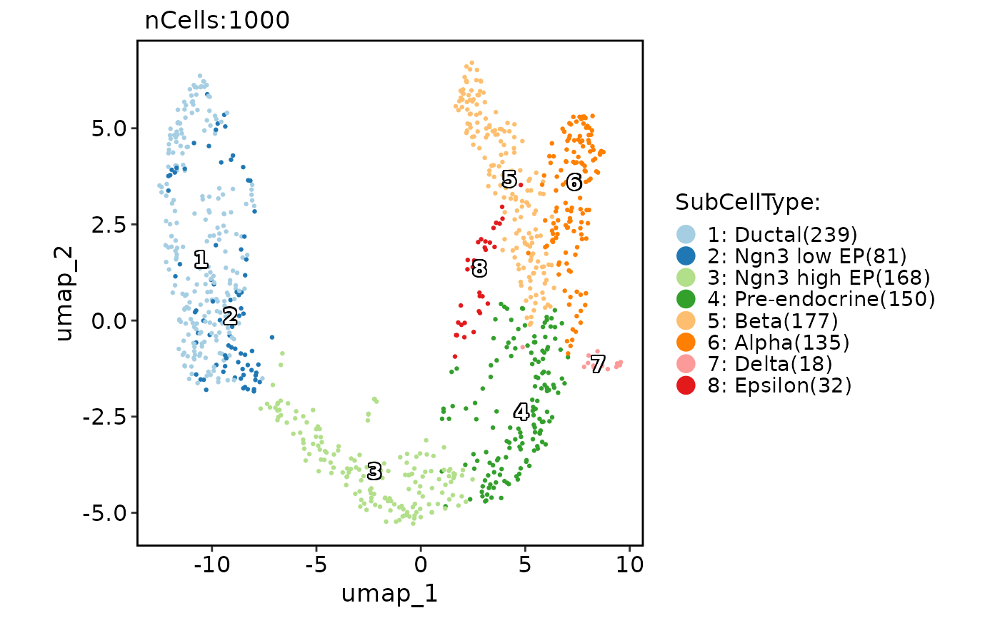
CellDimPlot(pancreas_sub,
group.by = "SubCellType", reduction = "UMAP",
label = TRUE, label.fg = "orange", label.bg = "red", label.size = 5
)
#> Warning: No shared levels found between `names(values)` of the manual scale and the data's fill values.
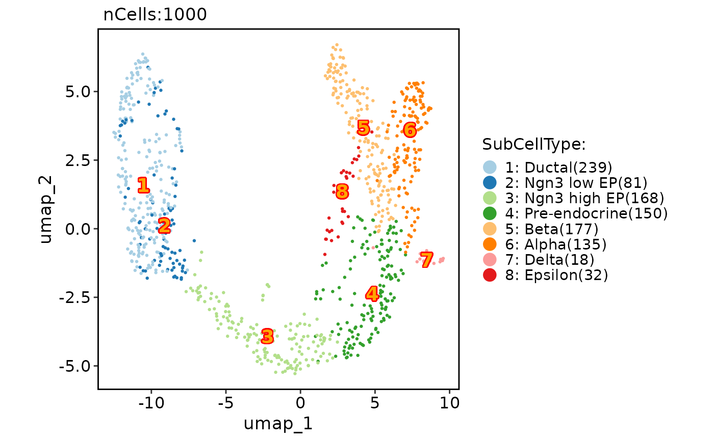
CellDimPlot(pancreas_sub,
group.by = "SubCellType", reduction = "UMAP",
label = TRUE, label_insitu = TRUE
)
#> Warning: No shared levels found between `names(values)` of the manual scale and the data's fill values.
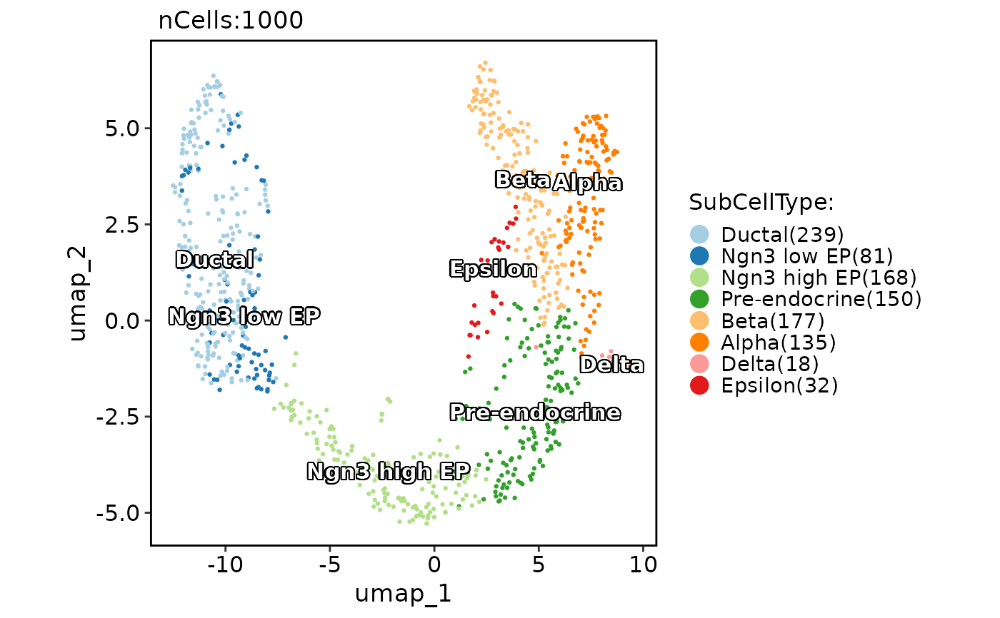
CellDimPlot(pancreas_sub,
group.by = "SubCellType", reduction = "UMAP",
label = TRUE, label_insitu = TRUE, label_repel = TRUE, label_segment_color = "red"
)
#> Warning: No shared levels found between `names(values)` of the manual scale and the data's fill values.
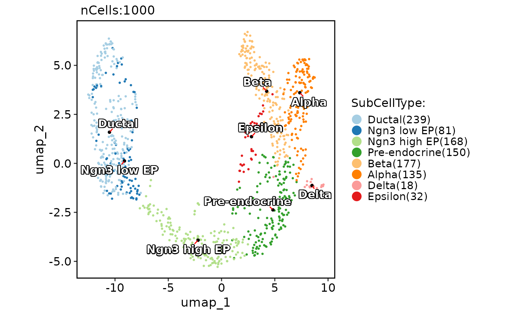
# Add various shape of marks
CellDimPlot(pancreas_sub, group.by = "SubCellType", reduction = "UMAP", add_mark = TRUE)
#> Warning: No shared levels found between `names(values)` of the manual scale and the data's fill values.
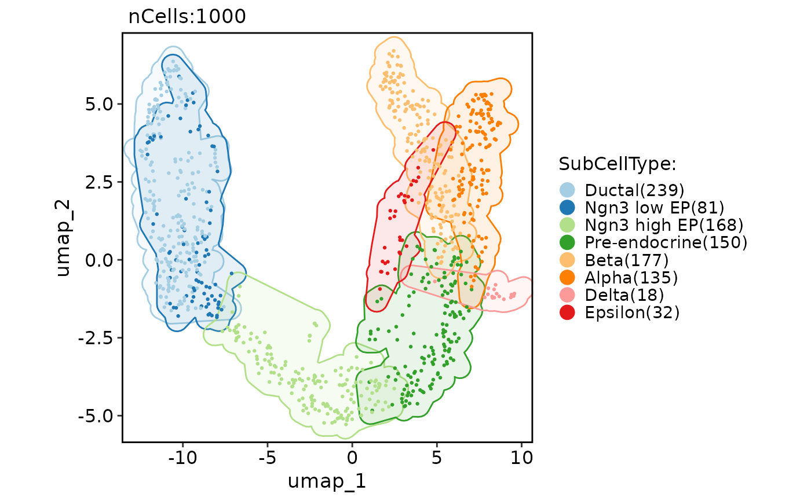
CellDimPlot(pancreas_sub, group.by = "SubCellType", reduction = "UMAP", add_mark = TRUE, mark_expand = unit(1, "mm"))
#> Warning: No shared levels found between `names(values)` of the manual scale and the data's fill values.
CellDimPlot(pancreas_sub, group.by = "SubCellType", reduction = "UMAP", add_mark = TRUE, mark_alpha = 0.3)
#> Warning: No shared levels found between `names(values)` of the manual scale and the data's fill values.
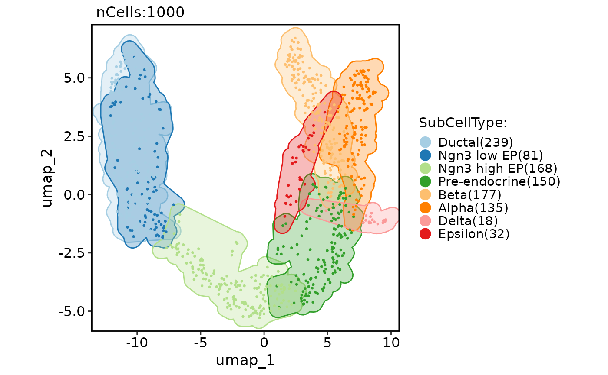
CellDimPlot(pancreas_sub, group.by = "SubCellType", reduction = "UMAP", add_mark = TRUE, mark_linetype = 2)
#> Warning: No shared levels found between `names(values)` of the manual scale and the data's fill values.
CellDimPlot(pancreas_sub, group.by = "SubCellType", reduction = "UMAP", add_mark = TRUE, mark_type = "ellipse")
#> Warning: No shared levels found between `names(values)` of the manual scale and the data's fill values.
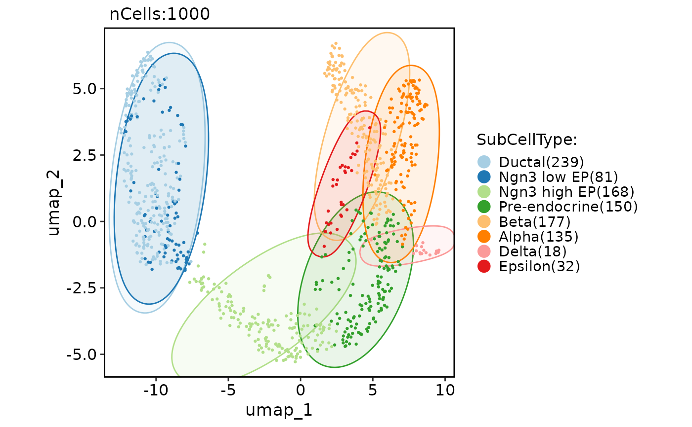
CellDimPlot(pancreas_sub, group.by = "SubCellType", reduction = "UMAP", add_mark = TRUE, mark_type = "rect")
#> Warning: No shared levels found between `names(values)` of the manual scale and the data's fill values.
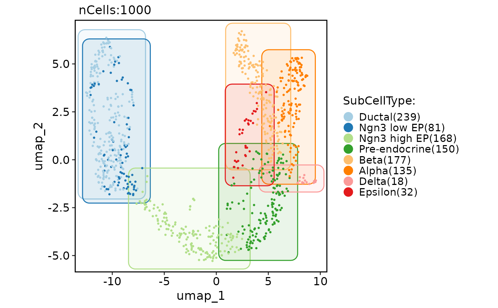
CellDimPlot(pancreas_sub, group.by = "SubCellType", reduction = "UMAP", add_mark = TRUE, mark_type = "circle")
#> Warning: No shared levels found between `names(values)` of the manual scale and the data's fill values.
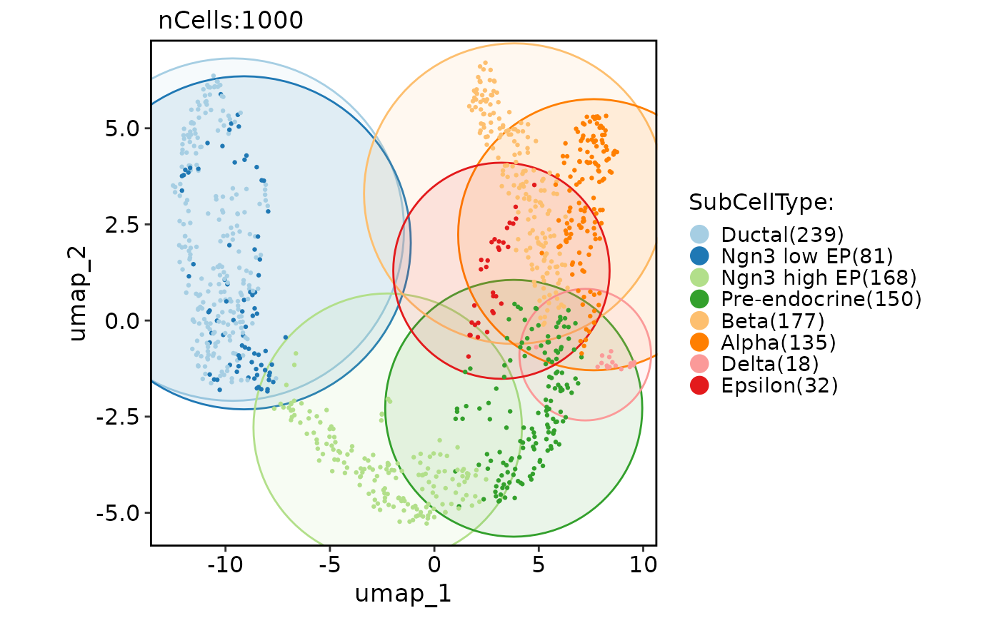
# Add a density layer
CellDimPlot(pancreas_sub, group.by = "SubCellType", reduction = "UMAP", add_density = TRUE)
#> Warning: No shared levels found between `names(values)` of the manual scale and the data's fill values.
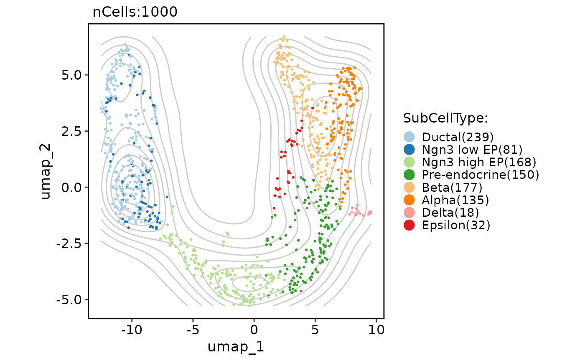
CellDimPlot(pancreas_sub, group.by = "SubCellType", reduction = "UMAP", add_density = TRUE, density_filled = TRUE)
#> Warning: No shared levels found between `names(values)` of the manual scale and the data's fill values.
#> Warning: Removed 396 rows containing missing values or values outside the scale range (`geom_raster()`).
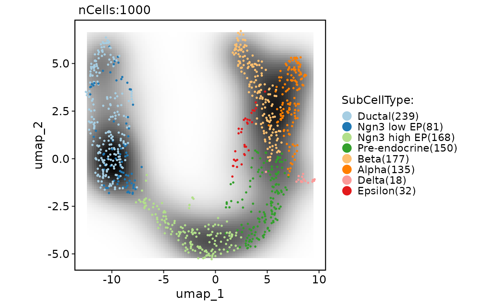
CellDimPlot(pancreas_sub,
group.by = "SubCellType", reduction = "UMAP",
add_density = TRUE, density_filled = TRUE, density_filled_palette = "Blues",
cells.highlight = TRUE
)
#> Warning: No shared levels found between `names(values)` of the manual scale and the data's fill values.
#> Warning: Removed 396 rows containing missing values or values outside the scale range (`geom_raster()`).
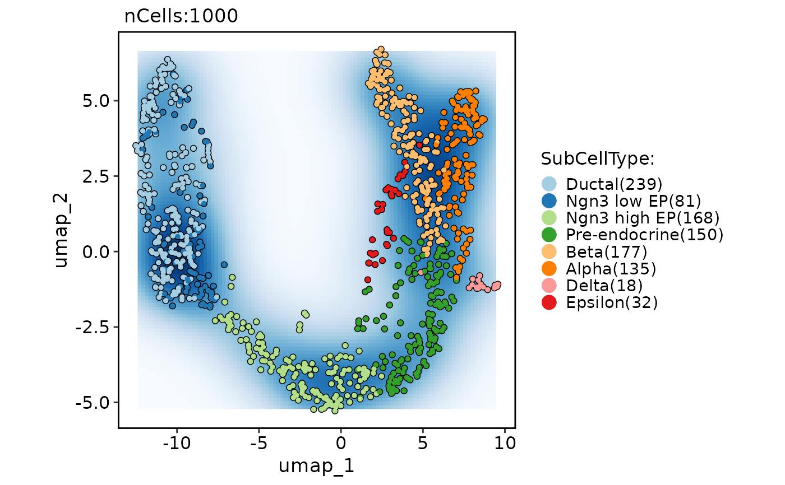
# Add statistical charts
CellDimPlot(pancreas_sub, group.by = "CellType", reduction = "UMAP", stat.by = "Phase")
#> Warning: No shared levels found between `names(values)` of the manual scale and the data's fill values.
#> Warning: No shared levels found between `names(values)` of the manual scale and the data's fill values.
#> Warning: No shared levels found between `names(values)` of the manual scale and the data's fill values.
#> Warning: No shared levels found between `names(values)` of the manual scale and the data's fill values.
#> Error in gtable_add_grob(gtable, grob, t = mean(gtable$layout[grep("panel", gtable$layout$name), "t"]), l = dim(gtable)[2], clip = clip): `grobs` must be a single grob or a list of grobs, not a list matrix.
CellDimPlot(pancreas_sub, group.by = "CellType", reduction = "UMAP", stat.by = "Phase", stat_plot_type = "ring", stat_plot_label = TRUE, stat_plot_size = 0.15)
#> Warning: No shared levels found between `names(values)` of the manual scale and the data's fill values.
#> Warning: No shared levels found between `names(values)` of the manual scale and the data's fill values.
#> Warning: Removed 1 row containing missing values or values outside the scale range (`geom_col()`).
#> Warning: Removed 1 row containing missing values or values outside the scale range (`geom_text_repel()`).
#> Warning: Removed 1 row containing missing values or values outside the scale range (`geom_col()`).
#> Warning: Removed 1 row containing missing values or values outside the scale range (`geom_text_repel()`).
#> Warning: Removed 1 row containing missing values or values outside the scale range (`geom_col()`).
#> Warning: Removed 1 row containing missing values or values outside the scale range (`geom_text_repel()`).
#> Warning: Removed 1 row containing missing values or values outside the scale range (`geom_col()`).
#> Warning: Removed 1 row containing missing values or values outside the scale range (`geom_text_repel()`).
#> Warning: Removed 1 row containing missing values or values outside the scale range (`geom_col()`).
#> Warning: Removed 1 row containing missing values or values outside the scale range (`geom_text_repel()`).
#> Warning: Removed 1 row containing missing values or values outside the scale range (`geom_col()`).
#> Warning: Removed 1 row containing missing values or values outside the scale range (`geom_text_repel()`).
#> Warning: No shared levels found between `names(values)` of the manual scale and the data's fill values.
#> Warning: No shared levels found between `names(values)` of the manual scale and the data's fill values.
#> Error in gtable_add_grob(gtable, grob, t = mean(gtable$layout[grep("panel", gtable$layout$name), "t"]), l = dim(gtable)[2], clip = clip): `grobs` must be a single grob or a list of grobs, not a list matrix.
CellDimPlot(pancreas_sub, group.by = "CellType", reduction = "UMAP", stat.by = "Phase", stat_plot_type = "bar", stat_type = "count", stat_plot_position = "dodge")
#> Warning: No shared levels found between `names(values)` of the manual scale and the data's fill values.
#> Warning: No shared levels found between `names(values)` of the manual scale and the data's fill values.
#> Warning: No shared levels found between `names(values)` of the manual scale and the data's fill values.
#> Warning: No shared levels found between `names(values)` of the manual scale and the data's fill values.
#> Error in gtable_add_grob(gtable, grob, t = mean(gtable$layout[grep("panel", gtable$layout$name), "t"]), l = dim(gtable)[2], clip = clip): `grobs` must be a single grob or a list of grobs, not a list matrix.
# Chane the plot type from point to the hexagonal bin
CellDimPlot(pancreas_sub, group.by = "CellType", reduction = "UMAP", hex = TRUE)
#> Error in check_R("hexbin"): could not find function "check_R"
CellDimPlot(pancreas_sub, group.by = "CellType", reduction = "UMAP", hex = TRUE, hex.bins = 20)
#> Error in check_R("hexbin"): could not find function "check_R"
CellDimPlot(pancreas_sub, group.by = "CellType", reduction = "UMAP", hex = TRUE, hex.count = FALSE)
#> Error in check_R("hexbin"): could not find function "check_R"
# Show neighbors graphs on the plot
pancreas_sub <- Standard_SCP(pancreas_sub)
#> [2025-09-07 19:43:18.609668] Start Standard_SCP
#> [2025-09-07 19:43:18.609851] Checking srtList... ...
#> Warning: Failed to check Seurat version compatibility: 'list' object cannot be coerced to type 'double'
#> Warning: The following arguments are not used: drop
#> Warning: The following arguments are not used: drop
#> Error in as.vector(data): no method for coercing this S4 class to a vector
CellDimPlot(pancreas_sub, group.by = "CellType", reduction = "UMAP", graph = "Standardpca_SNN")
#> Error in CellDimPlot(pancreas_sub, group.by = "CellType", reduction = "UMAP", graph = "Standardpca_SNN"): Graph Standardpca_SNN is not exist in the srt object.
CellDimPlot(pancreas_sub, group.by = "CellType", reduction = "UMAP", graph = "Standardpca_SNN", edge_color = "grey80")
#> Error in CellDimPlot(pancreas_sub, group.by = "CellType", reduction = "UMAP", graph = "Standardpca_SNN", edge_color = "grey80"): Graph Standardpca_SNN is not exist in the srt object.
# Show lineages on the plot based on the pseudotime
pancreas_sub <- RunSlingshot(pancreas_sub, group.by = "SubCellType", reduction = "UMAP", show_plot = FALSE)
FeatureDimPlot(pancreas_sub, features = paste0("Lineage", 1:3), reduction = "UMAP")
#> Error in rescale(colors_value): could not find function "rescale"
CellDimPlot(pancreas_sub, group.by = "SubCellType", reduction = "UMAP", lineages = paste0("Lineage", 1:3))
#> Warning: No shared levels found between `names(values)` of the manual scale and the data's fill values.
#> Warning: No shared levels found between `names(values)` of the manual scale and the data's fill values.
#> Warning: Removed 8 rows containing missing values or values outside the scale range (`geom_path()`).
#> Warning: Removed 8 rows containing missing values or values outside the scale range (`geom_path()`).
#> Error in gtable_add_grob(gtable, grob, t = mean(gtable$layout[grep("panel", gtable$layout$name), "t"]), l = dim(gtable)[2], clip = clip): `grobs` must be a single grob or a list of grobs, not a list matrix.
CellDimPlot(pancreas_sub, group.by = "SubCellType", reduction = "UMAP", lineages = paste0("Lineage", 1:3), lineages_whiskers = TRUE)
#> Warning: No shared levels found between `names(values)` of the manual scale and the data's fill values.
#> Warning: No shared levels found between `names(values)` of the manual scale and the data's fill values.
#> Warning: Removed 8 rows containing missing values or values outside the scale range (`geom_segment()`).
#> Warning: Removed 8 rows containing missing values or values outside the scale range (`geom_path()`).
#> Warning: Removed 8 rows containing missing values or values outside the scale range (`geom_path()`).
#> Error in gtable_add_grob(gtable, grob, t = mean(gtable$layout[grep("panel", gtable$layout$name), "t"]), l = dim(gtable)[2], clip = clip): `grobs` must be a single grob or a list of grobs, not a list matrix.
CellDimPlot(pancreas_sub, group.by = "SubCellType", reduction = "UMAP", lineages = paste0("Lineage", 1:3), lineages_span = 0.1)
#> Warning: No shared levels found between `names(values)` of the manual scale and the data's fill values.
#> Warning: No shared levels found between `names(values)` of the manual scale and the data's fill values.
#> Error in gtable_add_grob(gtable, grob, t = mean(gtable$layout[grep("panel", gtable$layout$name), "t"]), l = dim(gtable)[2], clip = clip): `grobs` must be a single grob or a list of grobs, not a list matrix.
# Show PAGA results on the plot
pancreas_sub <- RunPAGA(srt = pancreas_sub, group_by = "SubCellType", linear_reduction = "PCA", nonlinear_reduction = "UMAP", return_seurat = TRUE)
#> Error in check_Python("scanpy"): could not find function "check_Python"
CellDimPlot(pancreas_sub, group.by = "SubCellType", reduction = "UMAP", paga = pancreas_sub@misc$paga)
#> Warning: No shared levels found between `names(values)` of the manual scale and the data's fill values.
CellDimPlot(pancreas_sub, group.by = "SubCellType", reduction = "UMAP", theme_use = "theme_blank")
#> Warning: No shared levels found between `names(values)` of the manual scale and the data's fill values.
CellDimPlot(pancreas_sub, group.by = "SubCellType", reduction = "UMAP", theme_use = ggplot2::theme_classic, theme_args = list(base_size = 16))
#> Warning: No shared levels found between `names(values)` of the manual scale and the data's fill values.
CellDimPlot(pancreas_sub, group.by = "SubCellType", reduction = "UMAP") %>% panel_fix(height = 2, raster = TRUE, dpi = 30)
#> Error in panel_fix(., height = 2, raster = TRUE, dpi = 30): unused arguments (height = 2, raster = TRUE, dpi = 30)
# Highlight cells
CellDimPlot(pancreas_sub,
group.by = "SubCellType", reduction = "UMAP",
cells.highlight = colnames(pancreas_sub)[pancreas_sub$SubCellType == "Epsilon"]
)
#> Warning: No shared levels found between `names(values)` of the manual scale and the data's fill values.
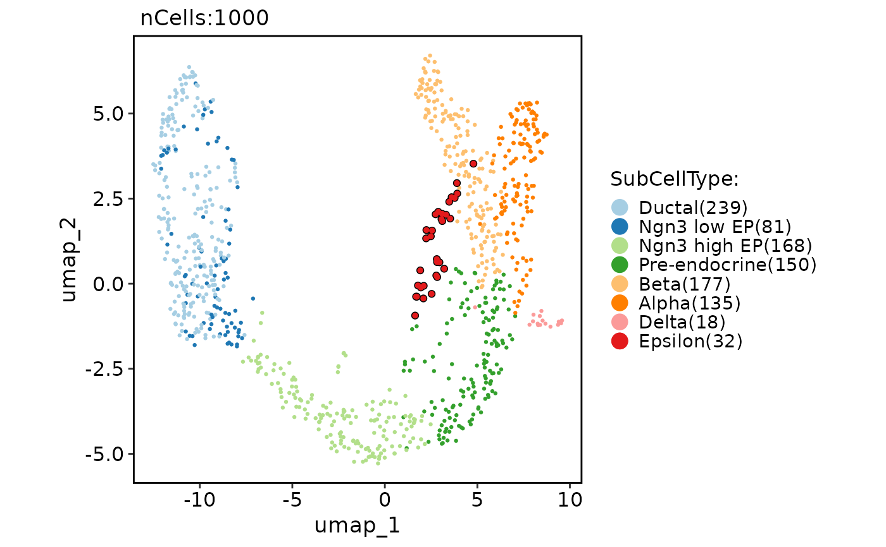
CellDimPlot(pancreas_sub,
group.by = "SubCellType", split.by = "Phase", reduction = "UMAP",
cells.highlight = TRUE, theme_use = "theme_blank", legend.position = "none"
)
#> Warning: No shared levels found between `names(values)` of the manual scale and the data's fill values.
#> Warning: No shared levels found between `names(values)` of the manual scale and the data's fill values.
#> Warning: No shared levels found between `names(values)` of the manual scale and the data's fill values.
# Add group labels
CellDimPlot(pancreas_sub, group.by = "SubCellType", reduction = "UMAP", label = TRUE)
#> Warning: No shared levels found between `names(values)` of the manual scale and the data's fill values.
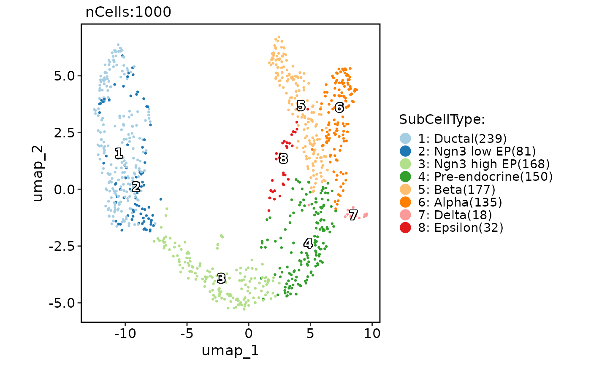
CellDimPlot(pancreas_sub,
group.by = "SubCellType", reduction = "UMAP",
label = TRUE, label.fg = "orange", label.bg = "red", label.size = 5
)
#> Warning: No shared levels found between `names(values)` of the manual scale and the data's fill values.
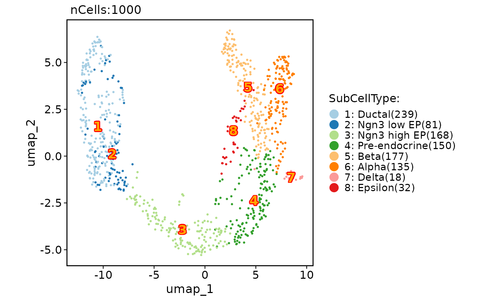
CellDimPlot(pancreas_sub,
group.by = "SubCellType", reduction = "UMAP",
label = TRUE, label_insitu = TRUE
)
#> Warning: No shared levels found between `names(values)` of the manual scale and the data's fill values.
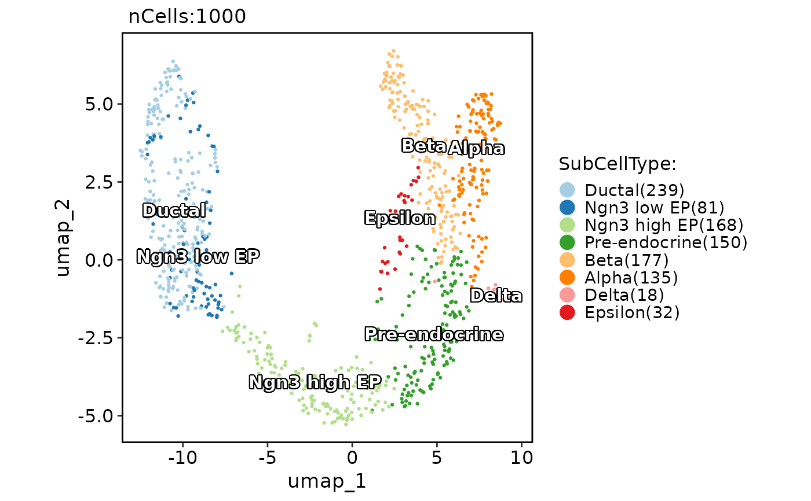
CellDimPlot(pancreas_sub,
group.by = "SubCellType", reduction = "UMAP",
label = TRUE, label_insitu = TRUE, label_repel = TRUE, label_segment_color = "red"
)
#> Warning: No shared levels found between `names(values)` of the manual scale and the data's fill values.
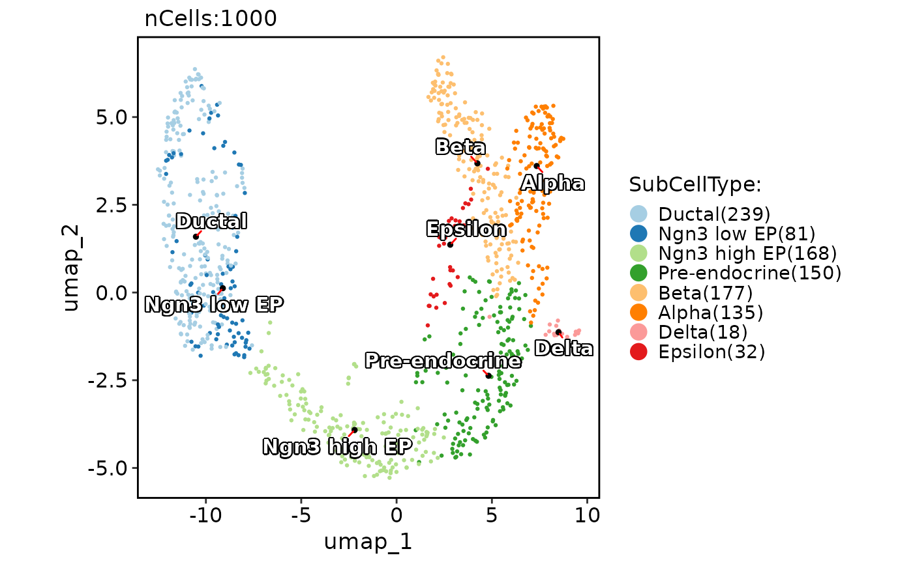
# Add various shape of marks
CellDimPlot(pancreas_sub, group.by = "SubCellType", reduction = "UMAP", add_mark = TRUE)
#> Warning: No shared levels found between `names(values)` of the manual scale and the data's fill values.
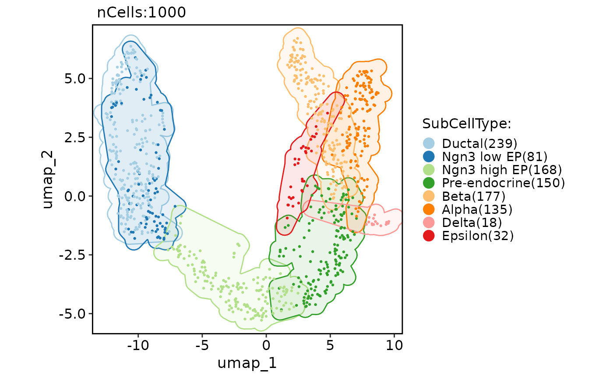
CellDimPlot(pancreas_sub, group.by = "SubCellType", reduction = "UMAP", add_mark = TRUE, mark_expand = unit(1, "mm"))
#> Warning: No shared levels found between `names(values)` of the manual scale and the data's fill values.
CellDimPlot(pancreas_sub, group.by = "SubCellType", reduction = "UMAP", add_mark = TRUE, mark_alpha = 0.3)
#> Warning: No shared levels found between `names(values)` of the manual scale and the data's fill values.
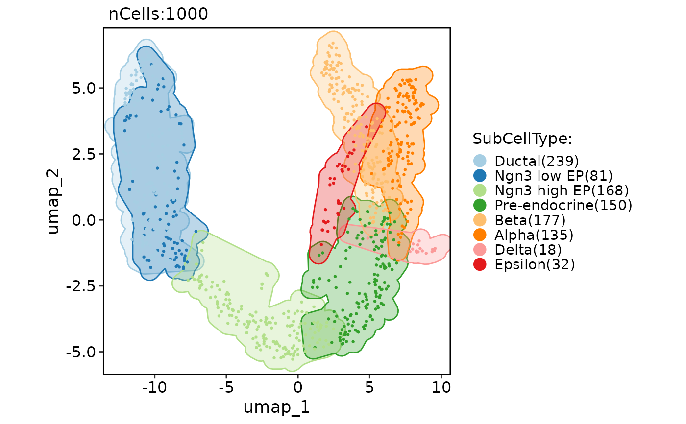
CellDimPlot(pancreas_sub, group.by = "SubCellType", reduction = "UMAP", add_mark = TRUE, mark_linetype = 2)
#> Warning: No shared levels found between `names(values)` of the manual scale and the data's fill values.
CellDimPlot(pancreas_sub, group.by = "SubCellType", reduction = "UMAP", add_mark = TRUE, mark_type = "ellipse")
#> Warning: No shared levels found between `names(values)` of the manual scale and the data's fill values.
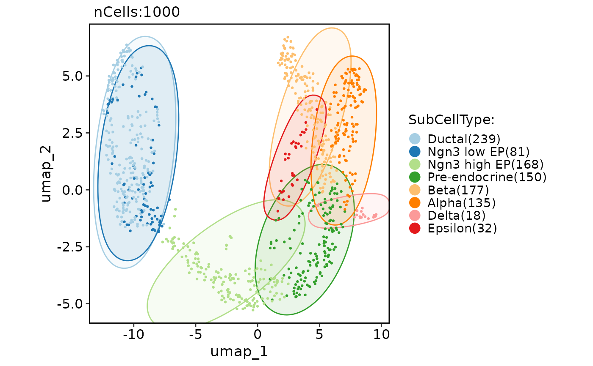
CellDimPlot(pancreas_sub, group.by = "SubCellType", reduction = "UMAP", add_mark = TRUE, mark_type = "rect")
#> Warning: No shared levels found between `names(values)` of the manual scale and the data's fill values.
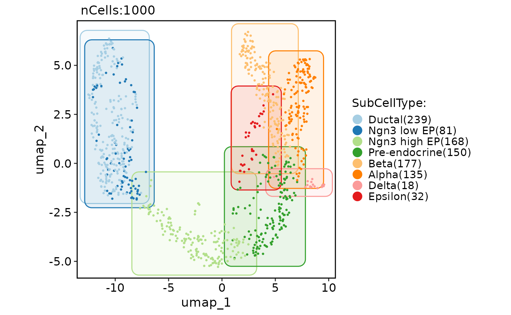
CellDimPlot(pancreas_sub, group.by = "SubCellType", reduction = "UMAP", add_mark = TRUE, mark_type = "circle")
#> Warning: No shared levels found between `names(values)` of the manual scale and the data's fill values.
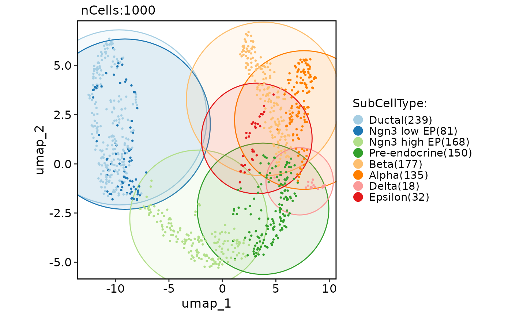
# Add a density layer
CellDimPlot(pancreas_sub, group.by = "SubCellType", reduction = "UMAP", add_density = TRUE)
#> Warning: No shared levels found between `names(values)` of the manual scale and the data's fill values.
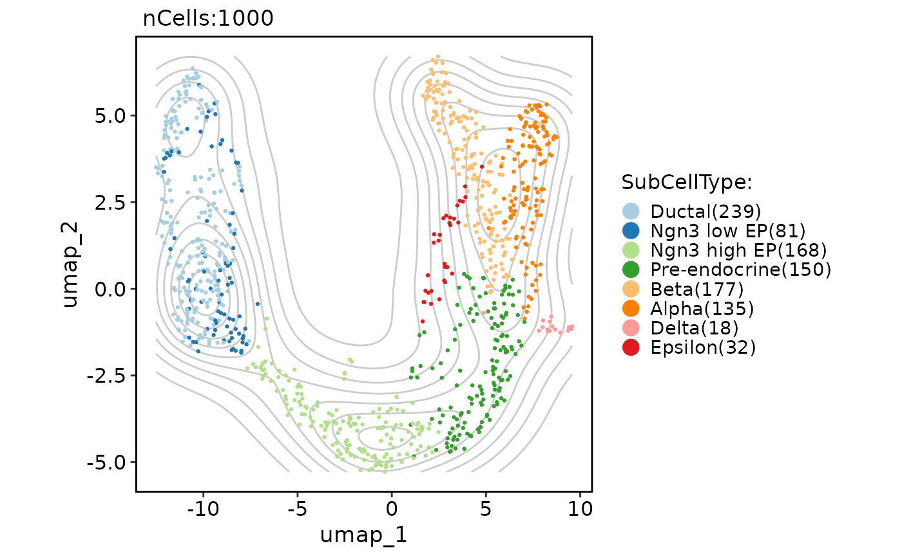
CellDimPlot(pancreas_sub, group.by = "SubCellType", reduction = "UMAP", add_density = TRUE, density_filled = TRUE)
#> Warning: No shared levels found between `names(values)` of the manual scale and the data's fill values.
#> Warning: Removed 396 rows containing missing values or values outside the scale range (`geom_raster()`).
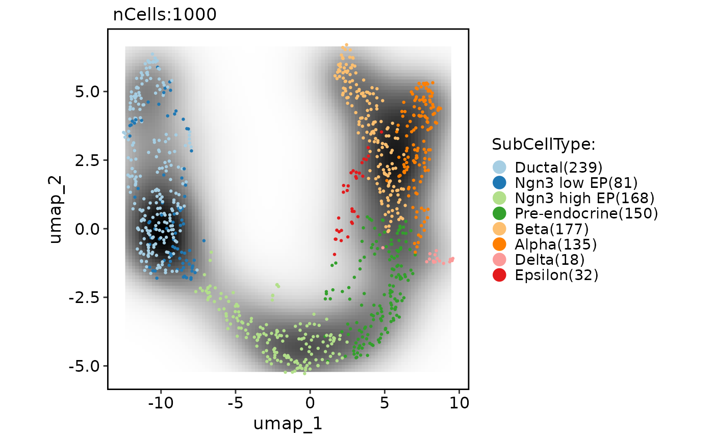
CellDimPlot(pancreas_sub,
group.by = "SubCellType", reduction = "UMAP",
add_density = TRUE, density_filled = TRUE, density_filled_palette = "Blues",
cells.highlight = TRUE
)
#> Warning: No shared levels found between `names(values)` of the manual scale and the data's fill values.
#> Warning: Removed 396 rows containing missing values or values outside the scale range (`geom_raster()`).
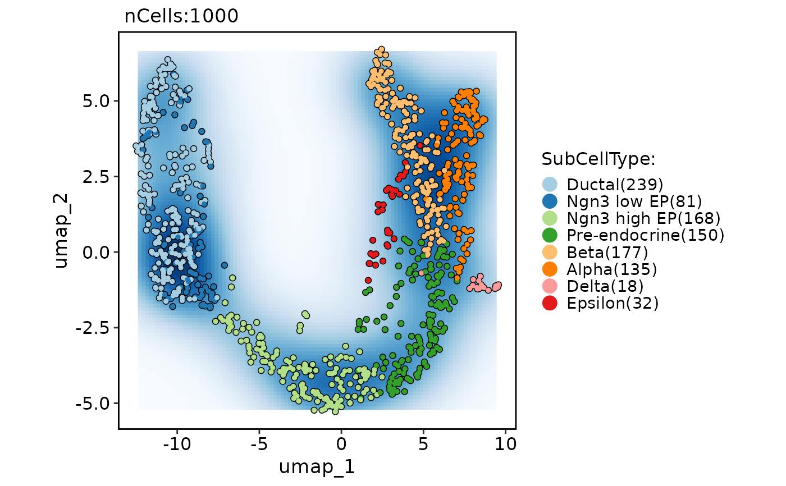
# Add statistical charts
CellDimPlot(pancreas_sub, group.by = "CellType", reduction = "UMAP", stat.by = "Phase")
#> Warning: No shared levels found between `names(values)` of the manual scale and the data's fill values.
#> Warning: No shared levels found between `names(values)` of the manual scale and the data's fill values.
#> Warning: No shared levels found between `names(values)` of the manual scale and the data's fill values.
#> Warning: No shared levels found between `names(values)` of the manual scale and the data's fill values.
#> Error in gtable_add_grob(gtable, grob, t = mean(gtable$layout[grep("panel", gtable$layout$name), "t"]), l = dim(gtable)[2], clip = clip): `grobs` must be a single grob or a list of grobs, not a list matrix.
CellDimPlot(pancreas_sub, group.by = "CellType", reduction = "UMAP", stat.by = "Phase", stat_plot_type = "ring", stat_plot_label = TRUE, stat_plot_size = 0.15)
#> Warning: No shared levels found between `names(values)` of the manual scale and the data's fill values.
#> Warning: No shared levels found between `names(values)` of the manual scale and the data's fill values.
#> Warning: Removed 1 row containing missing values or values outside the scale range (`geom_col()`).
#> Warning: Removed 1 row containing missing values or values outside the scale range (`geom_text_repel()`).
#> Warning: Removed 1 row containing missing values or values outside the scale range (`geom_col()`).
#> Warning: Removed 1 row containing missing values or values outside the scale range (`geom_text_repel()`).
#> Warning: Removed 1 row containing missing values or values outside the scale range (`geom_col()`).
#> Warning: Removed 1 row containing missing values or values outside the scale range (`geom_text_repel()`).
#> Warning: Removed 1 row containing missing values or values outside the scale range (`geom_col()`).
#> Warning: Removed 1 row containing missing values or values outside the scale range (`geom_text_repel()`).
#> Warning: Removed 1 row containing missing values or values outside the scale range (`geom_col()`).
#> Warning: Removed 1 row containing missing values or values outside the scale range (`geom_text_repel()`).
#> Warning: Removed 1 row containing missing values or values outside the scale range (`geom_col()`).
#> Warning: Removed 1 row containing missing values or values outside the scale range (`geom_text_repel()`).
#> Warning: No shared levels found between `names(values)` of the manual scale and the data's fill values.
#> Warning: No shared levels found between `names(values)` of the manual scale and the data's fill values.
#> Error in gtable_add_grob(gtable, grob, t = mean(gtable$layout[grep("panel", gtable$layout$name), "t"]), l = dim(gtable)[2], clip = clip): `grobs` must be a single grob or a list of grobs, not a list matrix.
CellDimPlot(pancreas_sub, group.by = "CellType", reduction = "UMAP", stat.by = "Phase", stat_plot_type = "bar", stat_type = "count", stat_plot_position = "dodge")
#> Warning: No shared levels found between `names(values)` of the manual scale and the data's fill values.
#> Warning: No shared levels found between `names(values)` of the manual scale and the data's fill values.
#> Warning: No shared levels found between `names(values)` of the manual scale and the data's fill values.
#> Warning: No shared levels found between `names(values)` of the manual scale and the data's fill values.
#> Error in gtable_add_grob(gtable, grob, t = mean(gtable$layout[grep("panel", gtable$layout$name), "t"]), l = dim(gtable)[2], clip = clip): `grobs` must be a single grob or a list of grobs, not a list matrix.
# Chane the plot type from point to the hexagonal bin
CellDimPlot(pancreas_sub, group.by = "CellType", reduction = "UMAP", hex = TRUE)
#> Error in check_R("hexbin"): could not find function "check_R"
CellDimPlot(pancreas_sub, group.by = "CellType", reduction = "UMAP", hex = TRUE, hex.bins = 20)
#> Error in check_R("hexbin"): could not find function "check_R"
CellDimPlot(pancreas_sub, group.by = "CellType", reduction = "UMAP", hex = TRUE, hex.count = FALSE)
#> Error in check_R("hexbin"): could not find function "check_R"
# Show neighbors graphs on the plot
pancreas_sub <- Standard_SCP(pancreas_sub)
#> [2025-09-07 19:43:18.609668] Start Standard_SCP
#> [2025-09-07 19:43:18.609851] Checking srtList... ...
#> Warning: Failed to check Seurat version compatibility: 'list' object cannot be coerced to type 'double'
#> Warning: The following arguments are not used: drop
#> Warning: The following arguments are not used: drop
#> Error in as.vector(data): no method for coercing this S4 class to a vector
CellDimPlot(pancreas_sub, group.by = "CellType", reduction = "UMAP", graph = "Standardpca_SNN")
#> Error in CellDimPlot(pancreas_sub, group.by = "CellType", reduction = "UMAP", graph = "Standardpca_SNN"): Graph Standardpca_SNN is not exist in the srt object.
CellDimPlot(pancreas_sub, group.by = "CellType", reduction = "UMAP", graph = "Standardpca_SNN", edge_color = "grey80")
#> Error in CellDimPlot(pancreas_sub, group.by = "CellType", reduction = "UMAP", graph = "Standardpca_SNN", edge_color = "grey80"): Graph Standardpca_SNN is not exist in the srt object.
# Show lineages on the plot based on the pseudotime
pancreas_sub <- RunSlingshot(pancreas_sub, group.by = "SubCellType", reduction = "UMAP", show_plot = FALSE)
FeatureDimPlot(pancreas_sub, features = paste0("Lineage", 1:3), reduction = "UMAP")
#> Error in rescale(colors_value): could not find function "rescale"
CellDimPlot(pancreas_sub, group.by = "SubCellType", reduction = "UMAP", lineages = paste0("Lineage", 1:3))
#> Warning: No shared levels found between `names(values)` of the manual scale and the data's fill values.
#> Warning: No shared levels found between `names(values)` of the manual scale and the data's fill values.
#> Warning: Removed 8 rows containing missing values or values outside the scale range (`geom_path()`).
#> Warning: Removed 8 rows containing missing values or values outside the scale range (`geom_path()`).
#> Error in gtable_add_grob(gtable, grob, t = mean(gtable$layout[grep("panel", gtable$layout$name), "t"]), l = dim(gtable)[2], clip = clip): `grobs` must be a single grob or a list of grobs, not a list matrix.
CellDimPlot(pancreas_sub, group.by = "SubCellType", reduction = "UMAP", lineages = paste0("Lineage", 1:3), lineages_whiskers = TRUE)
#> Warning: No shared levels found between `names(values)` of the manual scale and the data's fill values.
#> Warning: No shared levels found between `names(values)` of the manual scale and the data's fill values.
#> Warning: Removed 8 rows containing missing values or values outside the scale range (`geom_segment()`).
#> Warning: Removed 8 rows containing missing values or values outside the scale range (`geom_path()`).
#> Warning: Removed 8 rows containing missing values or values outside the scale range (`geom_path()`).
#> Error in gtable_add_grob(gtable, grob, t = mean(gtable$layout[grep("panel", gtable$layout$name), "t"]), l = dim(gtable)[2], clip = clip): `grobs` must be a single grob or a list of grobs, not a list matrix.
CellDimPlot(pancreas_sub, group.by = "SubCellType", reduction = "UMAP", lineages = paste0("Lineage", 1:3), lineages_span = 0.1)
#> Warning: No shared levels found between `names(values)` of the manual scale and the data's fill values.
#> Warning: No shared levels found between `names(values)` of the manual scale and the data's fill values.
#> Error in gtable_add_grob(gtable, grob, t = mean(gtable$layout[grep("panel", gtable$layout$name), "t"]), l = dim(gtable)[2], clip = clip): `grobs` must be a single grob or a list of grobs, not a list matrix.
# Show PAGA results on the plot
pancreas_sub <- RunPAGA(srt = pancreas_sub, group_by = "SubCellType", linear_reduction = "PCA", nonlinear_reduction = "UMAP", return_seurat = TRUE)
#> Error in check_Python("scanpy"): could not find function "check_Python"
CellDimPlot(pancreas_sub, group.by = "SubCellType", reduction = "UMAP", paga = pancreas_sub@misc$paga)
#> Warning: No shared levels found between `names(values)` of the manual scale and the data's fill values.
 CellDimPlot(pancreas_sub, group.by = "SubCellType", reduction = "UMAP", paga = pancreas_sub@misc$paga, paga_type = "connectivities_tree")
#> Warning: No shared levels found between `names(values)` of the manual scale and the data's fill values.
CellDimPlot(pancreas_sub, group.by = "SubCellType", reduction = "UMAP", paga = pancreas_sub@misc$paga, paga_type = "connectivities_tree")
#> Warning: No shared levels found between `names(values)` of the manual scale and the data's fill values.
 CellDimPlot(pancreas_sub,
group.by = "SubCellType", reduction = "UMAP", pt.size = 5, pt.alpha = 0.2,
label = TRUE, label_repel = TRUE, label_insitu = TRUE, label_segment_color = "transparent",
paga = pancreas_sub@misc$paga, paga_edge_threshold = 0.1, paga_edge_color = "black", paga_edge_alpha = 1,
legend.position = "none", theme_use = "theme_blank"
)
#> Warning: No shared levels found between `names(values)` of the manual scale and the data's fill values.
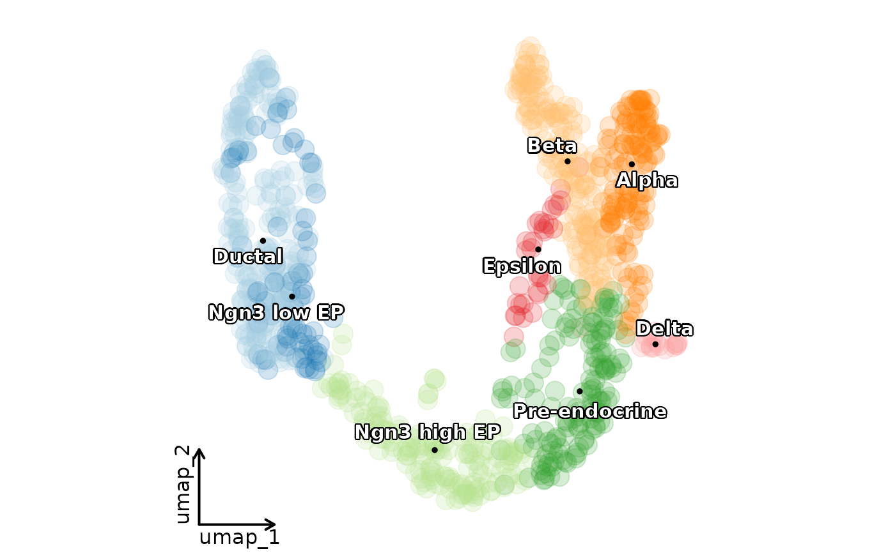
# Show RNA velocity results on the plot
pancreas_sub <- RunSCVELO(srt = pancreas_sub, group_by = "SubCellType", linear_reduction = "PCA", nonlinear_reduction = "UMAP", mode = "stochastic", return_seurat = TRUE)
#> Python module 'scvelo' is required for velocity analysis but is not installed.
#> To install, run: PrepareEnv() and then check_Python('scvelo')
#> Error in RunSCVELO(srt = pancreas_sub, group_by = "SubCellType", linear_reduction = "PCA", nonlinear_reduction = "UMAP", mode = "stochastic", return_seurat = TRUE): Required Python module 'scvelo' is not available. Please install it first.
CellDimPlot(pancreas_sub, group.by = "SubCellType", reduction = "UMAP", paga = pancreas_sub@misc$paga, paga_show_transition = TRUE)
#> Warning: No shared levels found between `names(values)` of the manual scale and the data's fill values.
CellDimPlot(pancreas_sub,
group.by = "SubCellType", reduction = "UMAP", pt.size = 5, pt.alpha = 0.2,
label = TRUE, label_repel = TRUE, label_insitu = TRUE, label_segment_color = "transparent",
paga = pancreas_sub@misc$paga, paga_edge_threshold = 0.1, paga_edge_color = "black", paga_edge_alpha = 1,
legend.position = "none", theme_use = "theme_blank"
)
#> Warning: No shared levels found between `names(values)` of the manual scale and the data's fill values.
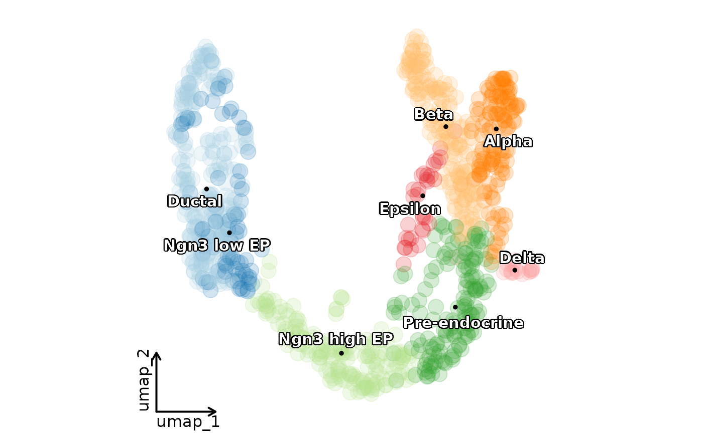
# Show RNA velocity results on the plot
pancreas_sub <- RunSCVELO(srt = pancreas_sub, group_by = "SubCellType", linear_reduction = "PCA", nonlinear_reduction = "UMAP", mode = "stochastic", return_seurat = TRUE)
#> Python module 'scvelo' is required for velocity analysis but is not installed.
#> To install, run: PrepareEnv() and then check_Python('scvelo')
#> Error in RunSCVELO(srt = pancreas_sub, group_by = "SubCellType", linear_reduction = "PCA", nonlinear_reduction = "UMAP", mode = "stochastic", return_seurat = TRUE): Required Python module 'scvelo' is not available. Please install it first.
CellDimPlot(pancreas_sub, group.by = "SubCellType", reduction = "UMAP", paga = pancreas_sub@misc$paga, paga_show_transition = TRUE)
#> Warning: No shared levels found between `names(values)` of the manual scale and the data's fill values.
 CellDimPlot(pancreas_sub, group.by = "SubCellType", reduction = "UMAP", pt.size = NA, velocity = "stochastic")
#> Error in check_R("metR"): could not find function "check_R"
CellDimPlot(pancreas_sub, group.by = "SubCellType", reduction = "UMAP", pt.size = 5, pt.alpha = 0.2, velocity = "stochastic", velocity_plot_type = "grid")
#> Error in check_R("metR"): could not find function "check_R"
CellDimPlot(pancreas_sub, group.by = "SubCellType", reduction = "UMAP", pt.size = 5, pt.alpha = 0.2, velocity = "stochastic", velocity_plot_type = "grid", velocity_scale = 1.5)
#> Error in check_R("metR"): could not find function "check_R"
CellDimPlot(pancreas_sub, group.by = "SubCellType", reduction = "UMAP", pt.size = 5, pt.alpha = 0.2, velocity = "stochastic", velocity_plot_type = "stream")
#> Error in check_R("metR"): could not find function "check_R"
CellDimPlot(pancreas_sub,
group.by = "SubCellType", reduction = "UMAP", pt.size = 5, pt.alpha = 0.2,
label = TRUE, label_insitu = TRUE,
velocity = "stochastic", velocity_plot_type = "stream", velocity_arrow_color = "yellow",
velocity_density = 2, velocity_smooth = 1, streamline_n = 20, streamline_color = "black",
legend.position = "none", theme_use = "theme_blank"
)
#> Error in check_R("metR"): could not find function "check_R"
CellDimPlot(pancreas_sub, group.by = "SubCellType", reduction = "UMAP", pt.size = NA, velocity = "stochastic")
#> Error in check_R("metR"): could not find function "check_R"
CellDimPlot(pancreas_sub, group.by = "SubCellType", reduction = "UMAP", pt.size = 5, pt.alpha = 0.2, velocity = "stochastic", velocity_plot_type = "grid")
#> Error in check_R("metR"): could not find function "check_R"
CellDimPlot(pancreas_sub, group.by = "SubCellType", reduction = "UMAP", pt.size = 5, pt.alpha = 0.2, velocity = "stochastic", velocity_plot_type = "grid", velocity_scale = 1.5)
#> Error in check_R("metR"): could not find function "check_R"
CellDimPlot(pancreas_sub, group.by = "SubCellType", reduction = "UMAP", pt.size = 5, pt.alpha = 0.2, velocity = "stochastic", velocity_plot_type = "stream")
#> Error in check_R("metR"): could not find function "check_R"
CellDimPlot(pancreas_sub,
group.by = "SubCellType", reduction = "UMAP", pt.size = 5, pt.alpha = 0.2,
label = TRUE, label_insitu = TRUE,
velocity = "stochastic", velocity_plot_type = "stream", velocity_arrow_color = "yellow",
velocity_density = 2, velocity_smooth = 1, streamline_n = 20, streamline_color = "black",
legend.position = "none", theme_use = "theme_blank"
)
#> Error in check_R("metR"): could not find function "check_R"